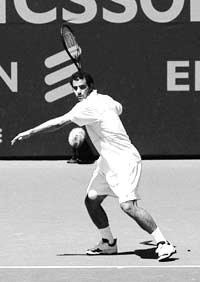
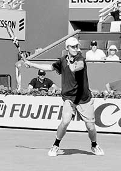
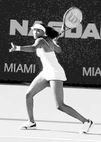
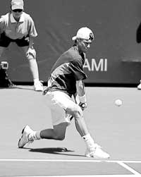
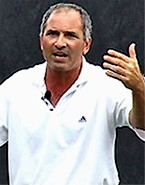

Previous: Non-linear tennis system | 🏠 Famous Coaches Home | Next: Optimize Your Technique – Part 2
Optimize Your Technique – Part 1
Comprehensive unified tennis knowledge base — Fundamentals, Stroke Analysis, Reference Library, and more
Optimize Your Technique – Part 1
By Nick Saviano
In this series of articles excerpted from his new book Maximum Tennis: 10 Keys to Unleashing Your On-Court Potential, Nick Saviano presents the keys to optimizing your technique, no matter what your level of play.
Focusing on the true fundamentals will allow your natural hitting style to emerge.
Focusing on the true fundamentals of technique will allow your natural hitting style to emerge, enabling you to hit cleanly, consistently, and with power. No standard technique or swing path for a stroke exists that is optimum for all players. However, there is an optimum technique for each individual player.
Every player is unique, with her own individual physical and psychological characteristics. What is optimum for one player, therefore, may not be optimum for another. That is why the world-class professionals in the game today use a variety of techniques.
Good technique is one of the keys to success in tennis; optimum technique is a key to reaching your full potential. The secret to optimizing your technique is to focus on the fundamentals of the game, while letting your own natural hitting style and flair evolve.
Understanding the Fundamentals of Technique
A great deal of confusion exists as to what fundamentals of technique are. The secret is to be able to differentiate between critical mechanical fundamentals and individualistic styles of hitting, while eliminating technical flaws that limit your ability. The beautiful thing about knowing the fundamentals is that by working on them you will naturally eliminate most of the technical flaws.
In this series of three articles, excerpted from my new book, Maximum Tennis, I will focus on simply what I consider to be the key technical fundamentals on ground strokes, volleys, returns, and serves. These fundamentals are relevant and applicable to virtually all ages and levels of play. You can pick out any stroke, learn the main points, work on them, and your game will improve.
Unfortunately, many players, from club players right up to touring professionals, spend most of their time working on the wrong technical things. They often attempt to correct technical flaws by working on their hitting style, which they mistakenly confuse with fundamental technique. This is an act of futility if the player does not possess the fundamentals in the first place.
For example, a player with poor body position in relation to the ball when she hits her two-handed backhand who spends her time working on the type of backswing she is going to take--loop or straight back--is engaging in an act of futility. Great players hit with many types of backswings successfully.



Pete Sampras, Andy Roddick and Venus Williams demonstrate forehand fundamentals.
However, no one with a great two-handed backhand hits with consistently poor body position in relation to the ball. The type of backswing is more a style of hitting; good body position is a fundamental. Remember, the fundamentals I will talk about in this chapter transcend style of hitting.
Look at the forehands of Pete Sampras, Venus Williams, and Andy Roddick. These great players all have very different techniques on their forehands. Each has a unique style of hitting the ball. Yet all three execute the basic fundamentals of the stroke flawlessly. The question is, do you know what those fundamentals are?
Once you know the true fundamentals of technique, you can turn your efforts to improving them. And when you do, two wonderful things will happen. First, you will improve the foundation of your technique, and, second, your personal style and flair on the court will emerge naturally. This combination is the key to developing your optimum technique, which will dramatically improve your game and maximize your enjoyment, as well.
Development as a Whole
You must look at developing your technique as part of a whole process of developing your ability to play the game successfully. Having good technique should not be your ultimate goal. It also cannot be taught in a vacuum. What I mean by that is that you don’t want to constantly separate your technique work from your tactics of play.
Too many players think that improving their technique will solve all of their problems. Your objective, therefore, is to develop your optimum technique that will enhance your strategy, tactics, shot selection, and ability to play points in a match.
Years ago, a young female pro I was working with called me at 2:00 a.m. from Europe in a panic. “Nick,” she cried on the phone, “I am missing all my backhands in the middle of the net. What should I do?” Obviously, she was looking for some profound technical advice. Tired, and not a little annoyed, I simply told her, “Aim higher!” and hung up. Later on when I spoke with her, she said that my advice really helped. The point is that having good technique means very little if it is not viewed as just another component of playing the game.
For example, you don’t want to work your backhand slice only by having someone feed you balls in practice (assuming you are not learning the slice for the first time). You need to incorporate tactical situations into your practice. You not only need to learn how to hit the shot but when to hit it, as well as from different locations and in different match situations.
It’s a lot different hitting a slice when you want to approach the net than trying to keep the ball low against an opponent who is rushing the net. So, when you are working on technique, always attempt to incorporate the tactical element into the session.
The 5 characteristics of great technique: simple, efficient, effective, flexible, and compatible with your personality.
I remember when I first realized that the game (and technique in particular) were evolving. I was playing in a tour event in Germany in 1983 in a first-round doubles match. We were playing against two juniors 15 and 16 years old from Germany, and we were hanging on for dear life as these two young players were pounding the ball at us. It was a packed house, and the crowd was going crazy because these two young Germans were part of their elite national team and there were high hopes for them.
I remember thinking, Here I am, a veteran touring professional, having trouble handling the pace of a 15-year-old. Wow, how the game has changed. It must be time for me to retire! Well, we barely beat them 7-5 in the third set. However, the good news was that we went on to win the tournament, so the thought about retirement was forgotten. But that young 15-year-old was not forgotten. His name is Boris Becker! Boris, along with Ivan Lendl, helped to revolutionize pro tennis with the power game.
Characteristics of Great Technique
Richard Schonborn of Germany --one of the top high-performance coaches in the world and a friend of mine--says that great technique has three characteristics (see his book, Advanced Techniques for Competitive Tennis). I have expanded his ideas to five characteristics of great technique.
Simple. It uses only the necessary (or few) body parts as possible and contains no unnecessary or counterproductive movements.
Efficient. It uses a minimum of effort to accomplish the objective. It also helps to minimize stress to the body, which can prevent injury.
Effective. It produces the desired results with consistency.
Flexible and versatile. It can be adapted to the tactical requirements of match situations.
Compatible. It facilitates your ability to play the game consistent with your personality << and also the physical ability, e.g. short, slow, weak, etc.>>.
Remember your objective is to optimize your technique by learning the mechanical fundamentals of stroke production and allowing for your own individual stroke characteristics (your style) to evolve.
Back to Basics
In the following paragraphs, I have listed key points that are applicable to almost every stroke. (The serve is an exception in a few cases because some of the mechanics of the serve apply only to that shot.) Regardless of your level of play--whether you are a beginner or a world-class professional--these fundamentals transcend every style and level of ability.
Balance and Center of Gravity
One of the single biggest causes of errors in tennis is poor balance. Your balance is interconnected with your center of gravity. Think of balance as your ability to control your equilibrium or stability.



Lleyton Hewitt displays a low center of gravity distributed over his base as he lands from his split step. He maintains good upper body posture as he approaches the ball. Note his beautiful balance and wide base of support, with knees bent and his head pointing toward the hitting zone.
There are two types of balance. Static balance is the ability to control the body while the body is not moving (for example, when you are about to serve). Dynamic balance is the ability to control the body during motion (for example, when you change direction after hitting a shot or when hitting on the run).
Your center of gravity constantly moves as you play. It is an imaginary point around which your body weight is evenly distributed. The ideal position as you are preparing to split step or to execute a shot is to have a low center of gravity (accomplished by bending the knees), with the center of gravity located directly above a point in between your feet or what is called your base. This concept is critical in understanding balance and stability and how gravity affects your tennis techniques.
For optimum stroke production, here are the key fundamentals relating to balance and center of gravity that you should focus on.
Keep good upper-body posture: Keep your head up and your shoulders and back relatively straight, as you approach and contact the ball.
Keep your upper body still: Attempt to keep your upper body still with minimal movement of your head in particular as you move to the ball.
Keep your head still: During the preparation phase and pointed in the direction of the hitting zone during the hitting phase keep your head as still as you can.
Use a proper base of support: Keep your feet at least shoulder-width apart as you set up to prepare to hit the ball.
Enhance stability: During the preparation phase and backswing, bend your knees, which will lower your center of gravity and enhance stability.
Kinetic Chain
Don’t be scared off by the fancy name. Kinetic chain simply means that the body acts as a system of chain links, whereby the force generated by one part of the body is transferred smoothly to the next.
Think of it this way: Your body coils in the preparation phase by rotation of your shoulders, trunk, hips, and bending your knees. Then your body uncoils during the hitting stage, with the energy being transferred up from your legs to your hips, trunk, shoulders, arm, wrist, and finally to your racquet. This is how the pros generate so much power.


James Blake demonstrates kinetic chain by loading the large muscles groups in the preparation phase, then unleashing this energy from the ground up.
It is important that you at least understand the concept that the most powerful tennis strokes (serves and ground strokes) begin with a leg drive that generates ground reaction forces that can be transferred up the segments of the kinetic chain to the racquet. This knowledge will help you better understand how to analyze your own technique and subsequently what you need to work on.
Now let’s look at the range of possible grips and the relative advantages and disadvantages. Then in the next two articles I’ll explain the underlying fundamentals of the individual strokes themselves: the groundstrokes, returns, volleys, and the serve.
Grips
Four major types of grips are used in tennis: continental, eastern, semi-western, and western. Each has advantages and disadvantages. The type of grip used will also affect a player’s game style and tactics.
Continental
The continental grip is one of the most common grips for the volley and the serve. It is not commonly used for forehand ground strokes, but many players--including world-class players--use it for both one- and two-handed backhands.
The most effective hitting zone for the continental grip tends to be lower and slightly closer to the body than the hitting zone for the eastern grip. When three out of the four Grand Slam tournaments were played on grass, many pros used the continental grip for both the forehand and backhand because of the extremely low bounce on grass. Few do today.
If you are a young, aspiring player and you use this grip for the forehand, I recommend that you get in touch with a local U.S. Professional Tennis Association (USPTA) or Professional Tennis Registry (PTR) pro to help you change it to an eastern grip.
Advantages of the continental grip are that it is effective for both the backhand and forehand volleys thereby eliminating the need to change your grip at the net; and it is effective for serving because it allows for good wrist action and forearm pronation. However, disadvantages of using the continental grip include difficulty in hitting medium to high balls and generating even a small amount of topspin on the forehand side.
Eastern
The classic eastern forehand and backhand grip is suitable for all spins and stances. It has a comfortable hitting zone that is slightly higher and farther in front than the continental hitting zone. The eastern grip is now a common grip for the one-handed backhand. Advantages of using the eastern grip are that it is effective for most types of shots, including drives and topspin, and it has few significant limitations. One disadvantage is the difficulty in using it on balls at shoulder height or higher.
Semiwestern
This grip is used for the forehand. By rotating the hand clockwise from the eastern grip, the semiwestern grip allows you to hit balls that bounce higher more comfortably and facilitates the use of topspin. This is a common grip among top professionals.
The semi-western grip, once considered incredibly extreme, but now the most common grip on the pro tour for the forehand.
The most comfortable hitting zone for the semi western grip is between chest and shoulder height. Advantages of using the semi western grip are that it is good for imparting topspin, hitting with power, and dealing with balls that are above waist height. Some disadvantages include difficulty in handling balls that are below waist level and short balls that land close to the net and having a larger grip change from forehand to standard backhand grips.
When Bjorn Borg first burst onto the international scene by winning the Italian and French Open championships as a teenager, he used the semi western grip. This grip was considered so incredibly extreme that all of the so-called experts confidently predicted that he could win only on clay because the ball bounced up high and he would never be able to adjust to grass-court tennis where the bounce was low. Well, after winning five consecutive Wimbledon championships (played on grass), nobody said that anymore. Now the semi western grip is the most common grip on the pro tour for the forehand.
Western
The western grip rotates farther around than the semi western and places the hand beneath the grip. This grip is not to be used for backhands and is considered an extreme grip even for forehands. Many professionals use this grip, most often clay-court specialists, because the ball bounces higher on clay. I would not recommend this grip for young players because it can limit the development of a well-rounded game.
Players who use the western grip often have difficulty transitioning to the net and hitting volleys. Advantages of the western grip include being good for imparting topspin on medium to high bouncing balls and making it easy to deal with balls at chest height or higher.
A few disadvantages are the extreme difficulty in dealing with balls that are below waist level and short balls that land close to the net; causing problems for hitting forehands on the run; having a large grip change from forehand to standard backhand grips; and having difficulty developing a well-rounded game. Players who use this grip often have difficulty making the adjustment to using the continental grip for volleys.
Now that we’ve looked at the pluses and minuses of the grips, we can examine the groundstroke fundamentals in the next article, followed by the returns, volleys, and serve.
Stay tuned.

In Maximum Tennis, Nick Saviano outlines the 10 characteristics that top players have in common and shows you how to develop them for yourself. Reading Nick's critically acclaimed book you will learn to: Play from the heart. Simplify your strokes. Focus on the elements you can control. Play to your personal strengths. And much more. Drawing on his experience as a player, educator and coach Nick describes the developmental processes followed by the world's top players. In clear concise language, he outlines the concepts any player can learn--and every coach can teach--to help you reach your full potential and enhance your love of the game.Click Here to Order!

Nick Saviano is one of the world's leading developmental coaches and the founder and director of Saviano High Performance Tennis Academy, located in Davie, Florida. A former elite American junior player and a two time All-American at Stanford, Nick played on the professional tour for a decade, was ranked in the top 50 in singles, and had wins over numerous world top 10 players. He is also the former director of men's coaching and coaching education for the USTA. Nick has headlined as a presenter at coaching conventions throughout the world and his critically acclaimed book "Maximum Tennis: 10 Keys to Unleashing Your On-Court Potential" is a best selling instructional title.
Click Here for more information on training with Nick Saviano.
Source: tennisplayer.net archive — Optimize Your Technique – Part 1.docx (John Yandell teaching library, 2002-2022). Extracted and rendered as HTML for Tennis Future Lab.